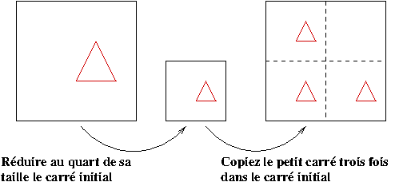
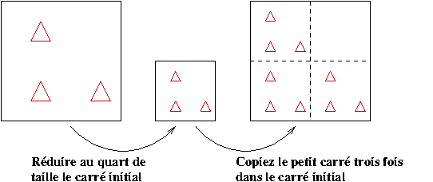

Triangle de Sierpisnki
La figure suivante affiche le fameux triangle de Sierpisnki.

C'est un exemple typique d'un ensemble fractal. Nous donnons une définition d'un objet fractal à la section dans le prochain document. Nous n'avons pas besoin de cette définition présentement.
Pour sauvegarder cette figure sur un ordinateur, on a besoin de 24235 bytes (format png). En utilisant une simple technique mathématique (c'est à dire les systèmes itératifs de fonctions (SIF) , cette figure (à n'importe quel degré de précision) peut être sauvegardée en utilisant seulement 552 bytes (un simple programme en Matlab).
La façon élémentaire de sauvegarder une figure (noir et blanc) est d'entreposer dans l'ordinateur l'information pour chaque pixel de la figure. À la section suivante, on explique comment dessiner le triangle de Sierpinski et comment le sauvegarder de façon économique sur un ordinateur.
Fondamentalement, la technique des SIF utilisée pour créer le triangle de Sierpinski peut être utilisée pour créer d'autres images comme nous allons le voir dans le document suivant.
Système itératif de fonctions
Le triangle de Sierpinski peut être généré a l'aide du système itératif de fonctions que nous décrivons ci-dessous.
- Premièrement, nous choisissons un ensemble de points dans un carré: une droite, un triangle, ... font l'affaire.
- Deuxièmement, nous réduisons le carré à un quart de sa taille initiale.
- Troisièmement, nous dessinons dans le carré de départ trois copies du carré que l'on vient de réduire, comme il est illustré dans la figure suivante.

Nous répétons les deuxième et troisième étapes ci-dessus plusieurs fois (jusqu'à ce que nous soyons satisfait de la figure que l'on obtient). Voici la second itération des deuxième et troisième étapes du SIF décrit ci-haut.

Indépendemment de l'ensemble de points que vous choisissez au
départ, nous obtenons toujours le triangle de Sierpinski après
un nombre infini
d'itérations.
Pour l'application suivante, Nous pouvons choisir une des trois figures initiales qui sont proposées, et le nombre d'itérations qui doivent être exécutées. Le lecteur devrait choisir un petit nombre d'itérations, au maximum 20, pour de pas dépasser les capacités du fureteur.
- Nombre d'itérations:
- Figure initiale:
Au lieu de sauvegarder dans l'ordinateur toutes les pixels de la figure du triangle de Sierpinski, nous avons seulement à sauvegarder en mémoire (utilisant des formules mathématiques) les deuxième et troisième étapes du SIF qui est décrit ci-haut.
Le triangle de Sierpinski sur le carré de côté 1 est généré par le SIF composé des trois fonctions suivantes. Ils réduisent le carré de côtés de longueur 1 à un carré de côtés de longueur 1/2, et copient ce petit carré dans le carré de côtés de longueur 1 comme on l'a décrit ci-haut.
- Première fonction:
X = x/2
Y = y/2 + 1/2 - Deuxième fonction:
X = x/2 + 1/2
Y = y/2 - Troisième fonction:
X = x/2
Y = y/2
Il y a une théorème mathématique qui explique pourquoi le SIF du
triangle de Sierpinski génère toujours la même image après un nombre
infini
d'itérations indépendemment
de l'ensemble initial qui a été choisi. En fait, chaque SIF produit
une seule image. Le théorème porte le nom de Théorème du Point
Fixe . Il est facile de comprendre ce théorème dans le
contexte du SIF qui est défini par la fonction logistique
que nous considérons dans les
dans un prochain document.
Question : Qu'arrive-t-il si la deuxième fonction du SIF ci-dessus fait aussi tourner le carré de 90 degrés?
Modèle probabiliste
Il y a une façon simple de présenter le triangle de Sierpinski. Soit A le point de coordonnée (0,1), B le point de coordonnée (1,0) et C l'origine (voir la figure ci-dessous). Supposons que nous avons un dé bien balancé et que 1,6 sont associés à A, 2,5 sont associés à B et 3,4 sont associés à C.

- Nous choisissons un point quelconque x0 du plan.
- Nous lançons le dé. Supposons que nous obtenions un 3.
- Le point x1 est le milieu du segment de droite qui joint x0 et C.
- Nous lançons le dé une deuxième fois. Supposons que nous obtenions un 1.
- Le point x2 est le milieu du segment de droite qui joint x1 et A.
- Ainsi de suite.
Les points isolés sont invisibles. On voit seulement les groupes de points. Ces groupes de points donne une ombre du triangle de Sierpinski. Pour obtenir une bonne approximation du triangle de Sierpinski, il faut un grand nombre d'itérations et le générateur de nombres aléatoires de votre ordinateur doit être très ... très bon.
Question : Quels sont les points qui forment le triangle de
Sierpinski?
Question : Qu'arrive-t-il si le dé n'est
pas bien balancé?
Deux bonnes références (pour les étudiants du premier cycle en mathématiques) sont Fractals Everywhere by Micheal Barnsley (Academic press, 1988) et Chaos and Fractals by H.-O. Peitgen, H. Jürgens and D. Saupe (Springer-Verlag, 1992).